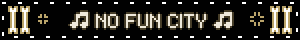

LETS TAKE BACK THE WEB AND GET REAL LOCAL ABOUT SHIT
-Are you tired of social media?
-Do you want to be more involved in the local art scene?
-Ever thought you needed a website?
-This site aims to take a non-standard approach in bringing our local community here in Vancouver together
-While this is definitely intended to be an art focused website, I won't limit it to that.
-The most important thing, is that many of us do not want to keep losing our time and energy to the machine
-This site aims to provide a 3 way solution:
-Firstly, This main site. This will include a few things, namely a directory of websites, which you can submit your URL to and be listed. This directory is intended to be open to anyone local who has a site they want discovered.
-There will also be a separate directory, where local artists can place links to not only their website, but to outside social medias, portfolios, and whatever they so desire.
-Secondly, a forum, where users can interact, post about upcoming events, shows, hangouts, looking for groups, and more, without ever touching instagram or whatever it may be.
-The forum is currently set up, but will need some activity and input on how to structure it, as I have not run a forum before! :P
-And third of all, I hope to implement a live chatbox on a page, that doesn't require a signup or any of your information being stored on my server!
-This allows users to chat in real time, talk about their websites, hobbies, whatever they might possibly want.
-I don't expect this to catch on immediately, but it would be cool to see a community here of thriving amateur web devs!
-If you have an interest in this project, and want to help, visit the link at the top of the page, and contact me if you want to help out!